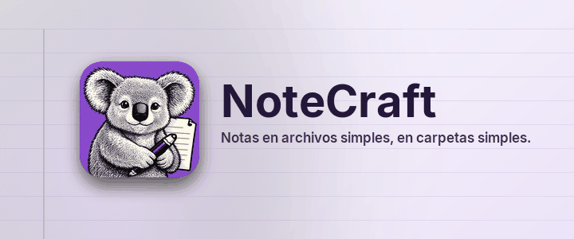

Notas en archivos simples, en carpetas simples.
NoteCraft guarda las notas como tú guardas los archivos: un cuaderno es una carpeta, una sección es una carpeta, una página es una carpeta con un archivo y sus imágenes dentro. Nada queda encerrado en una base de datos, así que cualquier carpeta que tu herramienta de sincronización ya vigila se convierte en un cuaderno sincronizado, y una copia de seguridad es una copia.
Cada página de esta sección muestra una parte de NoteCraft en la propia página:
Haz clic en cualquier parte de este párrafo y escribe. La página se guarda sola un segundo después de que pares. Pulsa Enter al final de la línea para un párrafo nuevo y Escape para salir de ella.
Volver a la página de inicio.
Esta página la tradujo un modelo de inteligencia artificial. Las correcciones son bienvenidas.